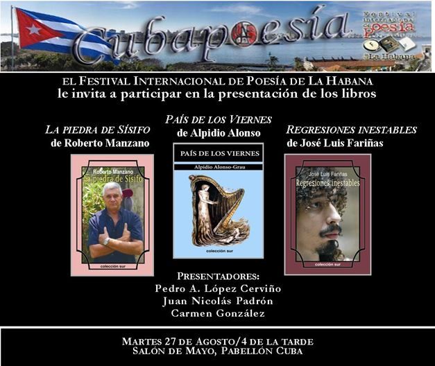

Entre otras razones que tienen que ver con mi impericia en estos avatares, no voy a presentarles un libro hoy. Primera, y principal razón, porque hay poemas que no caben en un libro: echan a volar rompiendo las rejas del papel encuadernado, trascienden el punto final, las cubiertas, el número implacable de la última página. …
Monthly Archive: August 2013
Aug 27 2013
the author alex pausides and his work
The last afternoon 21 August had a significant relief with the encounter between the author and his work, It organizes the Cuban book Institute in the library Provincial Rubén Martínez Villena in the Plaza de Armas, presenting on this occasion the poet and editor Alex Pausides. César López, National award of …


Stone of Sisyphus, Roberto Manzano.
Country Fridays, Alpidio Alonzo.
Unstable regressions, José Luis fariñas.
Presenters:
Pedro a.. López Cerviño, Juan Nicolas Padrón, Carmen Gonzalez.
This Tuesday 27 August, 4 of the afternoon in the Salon of may, Pabellon Cuba
Posted on:
August 27, 2013
Aug 27 2013
Jesus sama pacheco (Mariel, 1950)
THE SHIFT OF THE OFFENDED. JESUS SAMA PACHECO (MARIEL, 1950). (Poet, Narrator and writer's literature children and youth.) He has published: Secret love in public (Havana 1991, Madrid 1999, Havana 2009); Inhabitant of the mist (Havana 1993, Madrid 1999); Verses of sand (Havana 2005); The sword and the wall (Havana, 2007); …
Aug 27 2013
the imaginador, apropos of the fifty years of the 'book of heroes', from pablo armando Fernández
By: Jesus Sama Pacheco. Sin duda, la década del sesenta del pasado siglo en Cuba no fue sólo la época prodigiosa del rock y de la canción romántica; fue también la época de los cantos de gesta, de las crónicas, del testimonio cabalgando en todos los géneros literarios y artísticos, del cambio de valores, …
Aug 27 2013
the africa that I carry with me

By: Jesus Sama Pacheco. Comencé a conocer la obra poética de Antonio Gonçalves en Palabra del mundo, antología de la Colección sur que publicara Ediciones UNIÓN en el 2007, in which appear both. Él con El África que observo con los dedos, poem of his second trilogy (Trasmutaciones threshold), que erigido en un …
Aug 27 2013
from ícolo and bengo, the path of the stars, sacred hope travels the world
By: Jesus Sama Pacheco. It is an honour for me, and also a considerable challenge, introduce the book sacred hope today, Antonio Agostinho Neto. A man who was a paradigm of its time and is, and it will be a symbol of struggle for present and future generations, loyalty, of love and commitment …
Aug 24 2013
cubapoesía program, August-September of 2013
FESTIVAL INTERNACIONAL DE POESÍA DE LA HABANA CUBAPOESÍA PROGRAM, AUGUST-SEPTEMBER OF 2013. 27 August. Tuesday. May Hall of the Cuba Pavilion. 4 PM. Presentation of the books of the South collection: Stone of Sisyphus, Roberto Manzano, Unstable regressions, José Luis fariñas, In Friday s pai, of …
Aug 11 2013
Twelve writers Santiago in digital format
Pedro of the sickle testimonies audiovisual of different Poetics, traces of persistent and rigorous literary exercises, Creative profiles that enrich the magma of Cuban literature of this time, under the common denominator count as starting point the stage that gave birth to the singular José María Heredia, they can be seen on the disc …
Aug 10 2013
a cool Cuban wind
Inhabitant of the wind, of Alex Pausides (Pylon of Manzanillo, Cuba, 1950), It is the title of greatest repercusion of its author, and adds its Fourth Edition with the presente. The book is a metaphor for the adventure, freedom and dignity. Piero Botani, in a book entitled the shadow of Ulises-imagenes of a myth, …

Recent Comments